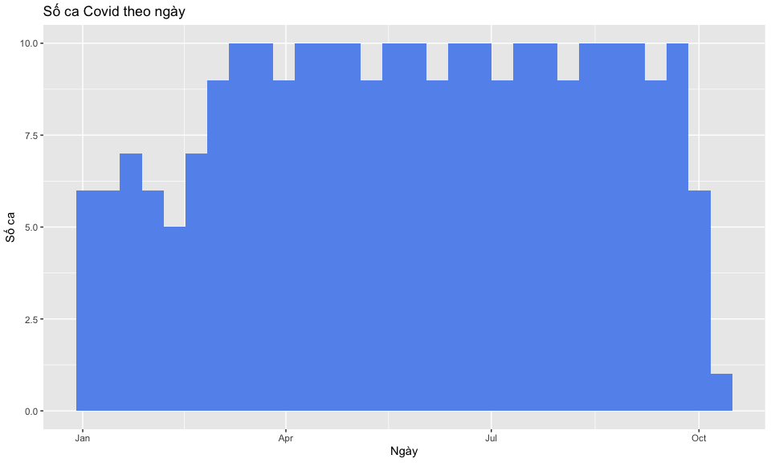

library(ggplot2)
library(ggsci)4 Trực quan hóa
4.1 Thực hành
4.1.1 Biểu đồ mẫu
Biểu đồ dưới đây nằm trong bài báo “Mapping routine measles vaccination in low- and middle-income countries”1 được đăng trên tạp chí Nature (IF 2022 = 64.8). Biểu đồ thể hiện tương quan giữa sự thay đổi bất bình đẳng địa lý và sự thay đổi độ phủ vaccine MCV1 của các quốc gia thu nhập thấp và trung bình từ năm 2000 đến năm 2019.

Chúng ta sẽ vẽ lại biểu đồ này bằng ggplot. Để đơn giản, chúng ta bỏ bớt một số chi tiết và sẽ vẽ biểu đồ sau:

Đầu tiên cần gọi library ggplot để vẽ biểu đồ và ggsci cho bảng màu.
4.1.2 Các bước thực hành
Nhìn vào biểu đồ, chúng ta thấy trục x (nằm ngang) là sự thay đổi độ phủ vaccine, trục y (nằm dọc) là sự thay đổi bất bình đẳng địa lý. Có 10 quốc gia được hiển thị tên là Angola, Papua New Guinea, Pakistan, Chad, Ethiopia, Kenya, Nigeria, Liberia, Burkina Faso, India.
Vậy chúng ta cần một data frame có ít nhất 3 cột: (1) tên quốc gia, (2) sự thay đổi độ phủ vaccine, (3) sự thay đổi bất bình đẳng địa lý.
country <- c("Angola", "Papua New Guinea", "Pakistan", "Chad", "Ethiopia", "Kenya", "Nigeria", "Liberia", "Burkina Faso", "India")
coverage <- c(-0.1, -0.35, 0.12, 0.14, 0.32, 0.07, 0.2, 0.18, 0.3, 0.35)
inequality <- c(0.1, 0.08, 0.05, 0.01, 0.005, -0.06, -0.07, -0.11, -0.13, -0.16)
df_plot <- data.frame(country, inequality, coverage)
df_plot country inequality coverage
1 Angola 0.100 -0.10
2 Papua New Guinea 0.080 -0.35
3 Pakistan 0.050 0.12
4 Chad 0.010 0.14
5 Ethiopia 0.005 0.32
6 Kenya -0.060 0.07
7 Nigeria -0.070 0.20
8 Liberia -0.110 0.18
9 Burkina Faso -0.130 0.30
10 India -0.160 0.35Chúng ta sẽ vẽ biểu đồ cho 10 quốc gia này trước. Dạng biểu đồ scatterplot trong ggplot tương ứng với geom_point().
ggplot(df_plot, aes(x = coverage, y = inequality)) +
geom_point()Để hiển thị tên quốc gia, chúng ta thêm geom_text() với label là tên nước (country).
ggplot(df_plot, aes(x = coverage, y = inequality)) +
geom_point() +
geom_text(aes(label = country))Hiện giờ chữ đang đè lên các điểm, chúng ta điều chỉnh vị trí của chữ bằng arguments hjust và vjust của geom_text(). Một số tên nước bị cắt mất như Papua New Guinea, chúng ta điều chỉnh lại giới hạn hiển thị của các trục tọa độ bằng xlim(), ylim() để hiển thị lại đầy đủ.
ggplot(df_plot, aes(x = coverage, y = inequality)) +
geom_point() +
geom_text(aes(label = country), hjust = -0.1, vjust = 0.2) +
xlim(c(-0.35, 0.55)) +
ylim(c(-0.17, 0.1))
Các điểm trong biểu đồ gốc có màu sắc và kích thước to nhỏ khác nhau, vậy trong data frame cần có thêm 1 cột màu sắc và 1 cột kích thước.
df_plot$size <- c(1.1, 1, 3, 1, 2, 1.1, 3, 1, 1.1, 4)
df_plot$color <- c(1, 2, 3, 1, 1, 1, 1, 1, 1, 3)
df_plot country inequality coverage size color
1 Angola 0.100 -0.10 1.1 1
2 Papua New Guinea 0.080 -0.35 1.0 2
3 Pakistan 0.050 0.12 3.0 3
4 Chad 0.010 0.14 1.0 1
5 Ethiopia 0.005 0.32 2.0 1
6 Kenya -0.060 0.07 1.1 1
7 Nigeria -0.070 0.20 3.0 1
8 Liberia -0.110 0.18 1.0 1
9 Burkina Faso -0.130 0.30 1.1 1
10 India -0.160 0.35 4.0 3Bây giờ chúng ta có thể thêm màu sắc và kích thước vào geom_point().
ggplot(df_plot, aes(x = coverage, y = inequality)) +
geom_point(aes(size = size, color = color)) +
geom_text(aes(label = country), hjust = -0.1, vjust = 0.2) +
xlim(c(-0.35, 0.55)) +
ylim(c(-0.17, 0.1))
Các quốc gia chính đã được vẽ xong, chúng ta cần có các điểm khác trên biểu đồ mà không có tên quốc gia. Có thể tạo ra các điểm ngẫu nhiên như vậy bằng R.
set.seed(123)
np <- 50
rd <- data.frame(country = rep("", np),
inequality = rnorm(n = np, mean = -0.03, sd = 0.05),
coverage = rnorm(n = np, mean = 0.1, sd = 0.12),
size = runif(np, min = 1, max = 2),
color = sample(1:6, np, replace = T))
head(rd) country inequality coverage size color
1 -0.05802378 0.13039822 1.238726 1
2 -0.04150887 0.09657439 1.962359 2
3 0.04793542 0.09485555 1.601366 5
4 -0.02647458 0.26423227 1.515030 5
5 -0.02353561 0.07290748 1.402573 1
6 0.05575325 0.28197647 1.880247 2set.seed(123): dùng để cố định cách tạo ra các điểm ngẫu nhiên.np <- 50: tạo ra 50 điểm ngẫu nhiên.country = rep("", np): các điểm này không có tên quốc gia.inequality = rnorm(n = np, mean = -0.03, sd = 0.05): sự thay đổi bất bình đẳng địa lý (giá trị trên trục y) của các điểm này được tạo ra ngẫu nhiên theo phân phối bình thường với trung bình là -0.03 và độ lệch chuẩn là 0.05.coverage = rnorm(n = np, mean = 0.1, sd = 0.12): sự thay đổi độ phủ vaccine (giá trị trên trục x) của các điểm này được tạo ra ngẫu nhiên theo phân phối bình thường với trung bình là 0.1 và độ lệch chuẩn là 0.12.size = runif(np, min = 1, max = 2): kích thước các điểm này là số thực ngẫu nhiên từ 1 đến 2.color = sample(1:6, np, replace = T): màu sắc là số nguyên ngẫu nhiên từ 1 đến 6.
Bây giờ chúng ta ghép data frame rd này với data frame của biểu đồ df_plot. Cột màu sắc được đưa về dạng factor để hiển thị màu. Sau đó dùng code ggplot trên để vẽ.
df_plot <- rbind(df_plot, rd)
df_plot$color <- factor(df_plot$color)
ggplot(df_plot, aes(x = coverage, y = inequality)) +
geom_point(aes(size = size, color = color)) +
geom_text(aes(label = country), hjust = -0.1, vjust = 0.2) +
xlim(c(-0.35, 0.55)) +
ylim(c(-0.17, 0.1))4.1.3 Kết quả
Biểu đồ được tạo ra đã tương đối giống biểu đồ gốc. Chúng ta có thể thêm các đường thẳng x = 0, y = 0, chọn bảng màu, chọn lại theme cho biểu đồ để nhìn giống biểu đồ gốc hơn.
ggplot(df_plot, aes(x = coverage, y = inequality)) +
geom_point(aes(size = size, color = color), alpha = 0.8) +
geom_text(aes(label = country), hjust = -0.1, vjust = 0.2) +
xlim(c(-0.35, 0.55)) +
ylim(c(-0.17, 0.1)) +
geom_vline(xintercept = 0) +
geom_hline(yintercept = 0) +
scale_color_npg() +
theme_classic() +
theme(legend.position = "none")